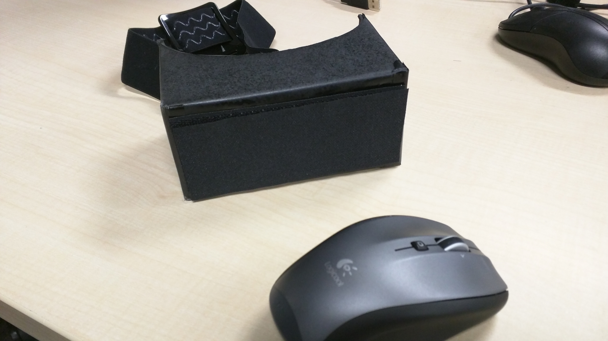

Truth?
Project Info
As technology advances, we will be able to gather more and more information about ourselves. We will also have less choice as to what information remains private. This project is a social experiment, exploring the result of forced augmentation.
This project was showcased as a part of Student Design Competition in Augmented Human 2015, Singapore.
Awards: People's choice 1st Winner
- Status : Done
- Project Member: 1 Project Manager, 2 Designer (self included) + 1 Coder
Skills:
Idea
We use facial expression to communicate, and hide, our feelings. But how much do we fake, and how much is real. We say things like “I’m excited!” when we aren’t. Are we even aware of how sincere/insincere we really are? What happens when we cannot control the privacy of our emotions?
We propose to replace the top half of a user's face with an artificial digital version that changes expression according to heartbeat. When people wear this augmentation, will they start being more honest? Or will people still try to hide their emotions, creating weird situations where the top artificial half of a person's face shows nervousness/excitement, while the bottom real half tries to act cool.
Design Process
For this project we used these following tools:
- Heartbeat sensor
- Arduino to process data from sensor
- Android phone to display the augmented eyes
- Google Cardboard as the phone container

- We use 2 phones, 1 inside the the cardboard so the user can see their surrounding. 1 outside the cardboard to augment the eyes.
- Google cardboard is used to mount the phones.